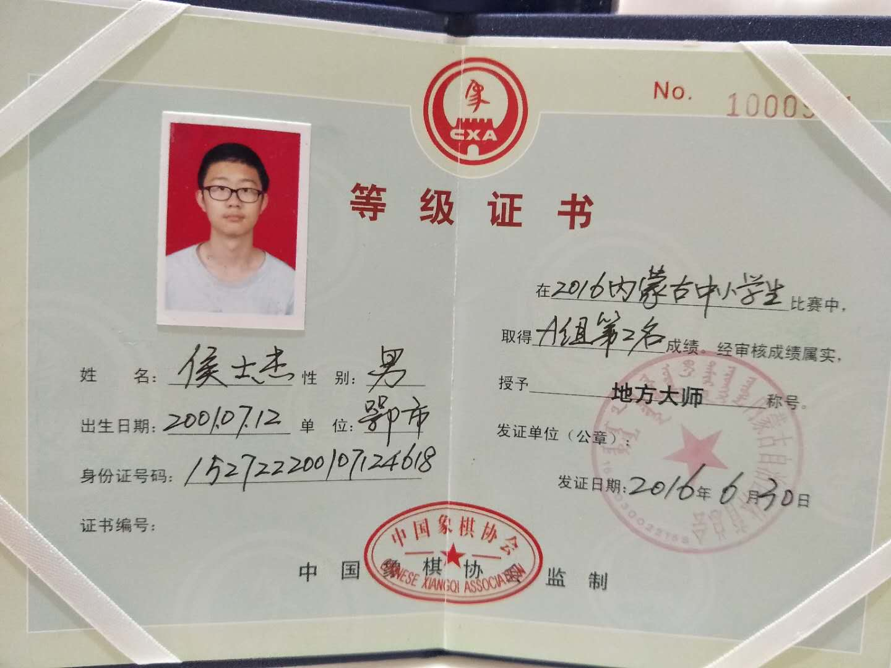
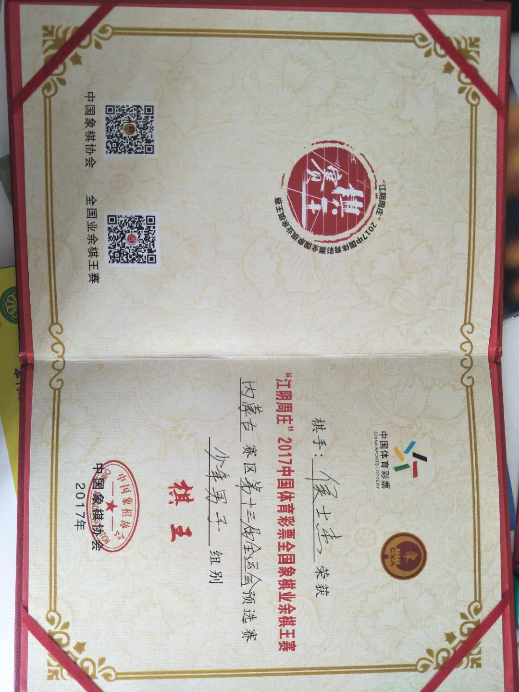
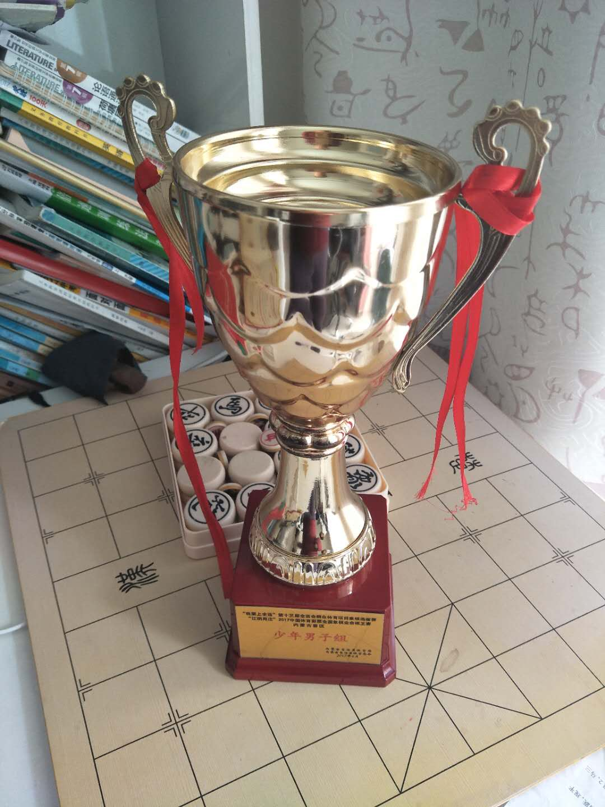
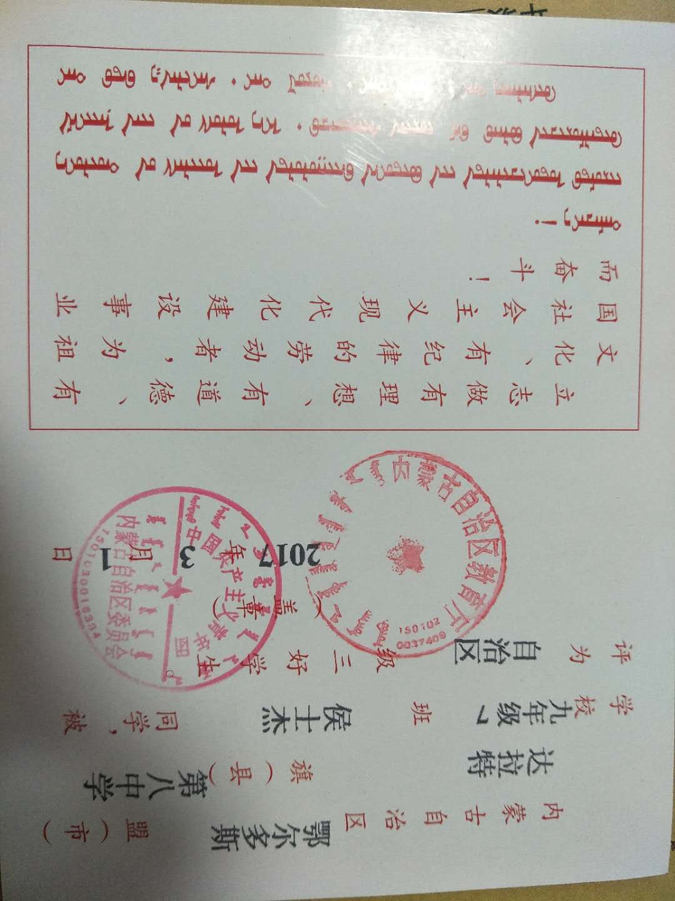
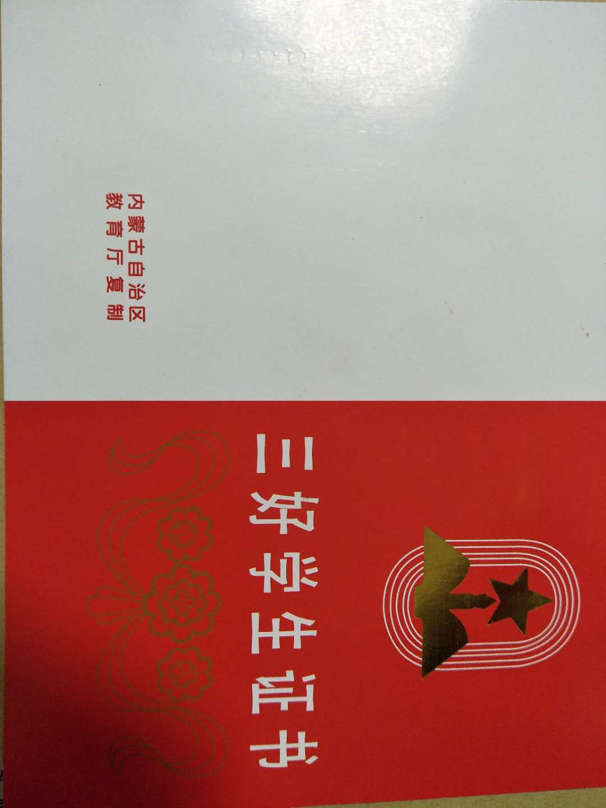
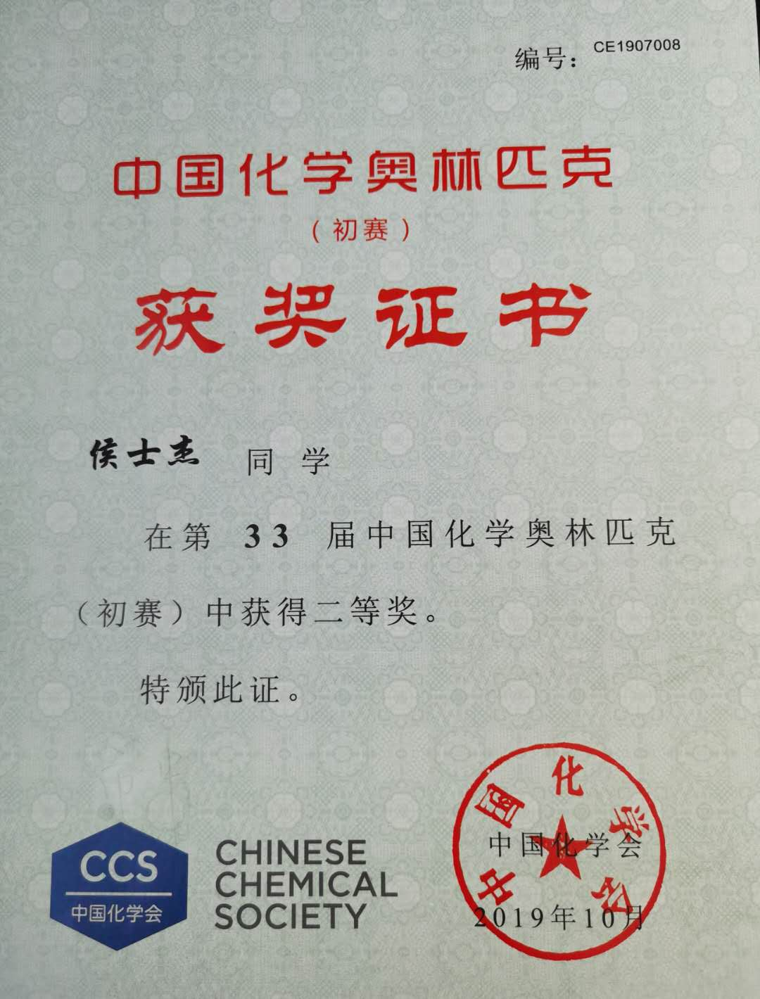

侯士杰，汉族，男，20岁，单身，现就读于北京大学药学院。身材魁梧，体格健壮，乐观开朗，善良真诚。爱好中国象棋，乒乓球，三国杀等。乐于交友，来（mei）着（zi）不拒哦。
2016年内蒙古中国象棋少年锦标赛A组亚军并评为“地方大师”等级
2017年全国业余棋王赛内蒙古赛区少年男子组棋王(并代表内蒙古赛区出战天津全运会)
 2017年内蒙古自治区三好学生
 2019年全国化学竞赛省级二等奖
现在呢，俺在北大本部读医学预科，明年就要回医学部咯。俺在努力完成学业的同时，参加了学校的散打社与象棋社团，并准备成为为象棋队的一员，为学校争得荣誉！